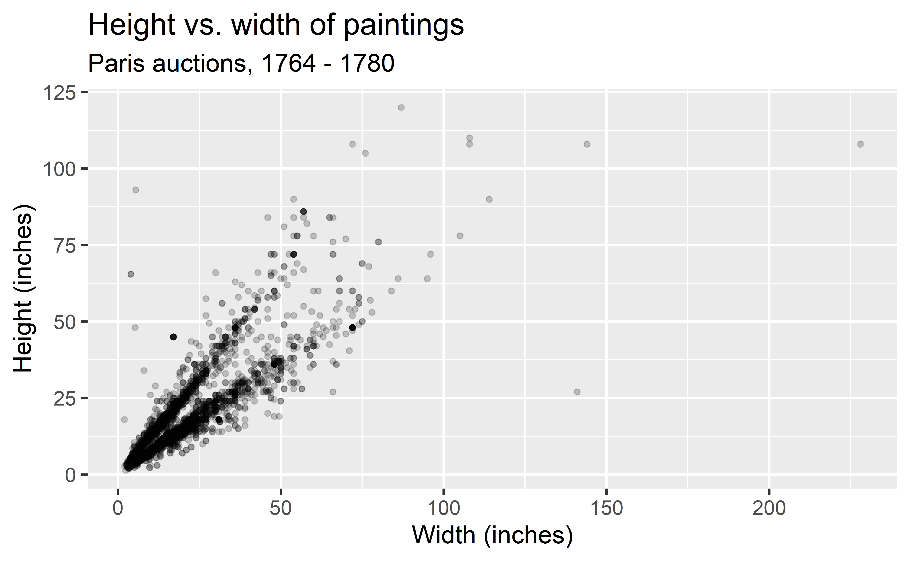

The language of models
Data Science in a Box
layout: true
class: middle
What is a model?
Modelling
- Use models to explain the relationship between variables and to make predictions
- For now we will focus on linear models (but remember there are many many other types of models too!)
.pull-left[] .pull-right[]
Paris Paintings
pp <- read_csv("data/paris-paintings.csv", na = c("n/a", "", "NA"))- Source: Printed catalogues of 28 auction sales in Paris, 1764 - 1780
- Data curators Sandra van Ginhoven and Hilary Coe Cronheim (who were PhD students in the Duke Art, Law, and Markets Initiative at the time of putting together this dataset) translated and tabulated the catalogues
- 3393 paintings, their prices, and descriptive details from sales catalogues over 60 variables
Auctions today
.center[ ]
Auctions back in the day

.footnote[ .small[ Pierre-Antoine de Machy, Public Sale at the Hôtel Bullion, Musée Carnavalet, Paris (18th century)]]
Paris auction market

.footnote[ .small[ Plot credit: Sandra van Ginhoven]]
Départ pour la chasse

Auction catalog text
.pull-left[] .pull-right[ .small[ Two paintings very rich in composition, of a beautiful execution, and whose merit is very remarkable, each 17 inches 3 lines high, 23 inches wide; the first, painted on wood, comes from the Cabinet of Madame la Comtesse de Verrue; it represents a departure for the hunt: it shows in the front a child on a white horse, a man who gives the horn to gather the dogs, a falconer and other figures nicely distributed across the width of the painting; two horses drinking from a fountain; on the right in the corner a lovely country house topped by a terrace, on which people are at the table, others who play instruments; trees and fabriques pleasantly enrich the background.]]


pp %>%
filter(name == "R1777-89a") %>%
glimpse().small[ .pull-left[] .pull-right[]]
class: middle
Modeling the relationship between variables
Heights
.small[]
Widths
.small[]
Models as functions
- We can represent relationships between variables using functions
- A function is a mathematical concept: the relationship between an output and one or more inputs
- Plug in the inputs and receive back the output
- Example: The formula \(y = 3x + 7\) is a function with input \(x\) and output \(y\). If \(x\) is \(5\), \(y\) is \(22\), \(y = 3 \times 5 + 7 = 22\)
Height as a function of width
.panelset[ .panel[.panel-name[Plot]] .panel[.panel-name[Code]]]
… without the measure of uncertainty
.panelset[ .panel[.panel-name[Plot]] .panel[.panel-name[Code]]]
… with different cosmetic choices
.panelset[ .panel[.panel-name[Plot]] .panel[.panel-name[Code]]]
Other smoothing methods: gam
.panelset[ .panel[.panel-name[Plot]] .panel[.panel-name[Code]]]
Other smoothing methods: loess
.panelset[ .panel[.panel-name[Plot]] .panel[.panel-name[Code]]]
Vocabulary
- Response variable: Variable whose behavior or variation you are trying to understand, on the y-axis
| - Explanatory variables: Other variables that you want to use to explain the variation in the response, on the x-axis |
|---|
| - Predicted value: Output of the model function - The model function gives the typical (expected) value of the response variable conditioning on the explanatory variables |
- Residuals: A measure of how far each case is from its predicted value (based on a particular model)
- Residual = Observed value - Predicted value
- Tells how far above/below the expected value each case is
Residuals
.panelset[ .panel[.panel-name[Plot]] .panel[.panel-name[Code] .small[]]]
.question[ The plot below displays the relationship between height and width of paintings. The only difference from the previous plots is that it uses a smaller alpha value, making the points somewhat transparent. What feature is apparent in this plot that was not (as) apparent in the previous plots? What might be the reason for this feature?]

Landscape paintings
- Landscape painting is the depiction in art of landscapes – natural scenery such as mountains, valleys, trees, rivers, and forests, especially where the main subject is a wide view – with its elements arranged into a coherent composition.1
- Landscape paintings tend to be wider than they are long.
- Portrait painting is a genre in painting, where the intent is to depict a human subject.2
- Portrait paintings tend to be longer than they are wide.
.footnote[ [1] Source: Wikipedia, Landscape painting]
Multiple explanatory variables
.panelset[ .panel[.panel-name[Plot] .pull-left-narrow[ .question[ How, if at all, does the relationship between width and height of paintings vary by whether or not they have any landscape elements?]] .pull-right-wide[]] .panel[.panel-name[Code]]]
Extending regression lines
.panelset[ .panel[.panel-name[Plot]] .panel[.panel-name[Code]]]
Models - upsides and downsides
- Models can sometimes reveal patterns that are not evident in a graph of the data. This is a great advantage of modeling over simple visual inspection of data.
- There is a real risk, however, that a model is imposing structure that is not really there on the scatter of data, just as people imagine animal shapes in the stars. A skeptical approach is always warranted.
Variation around the model…
is just as important as the model, if not more!
Statistics is the explanation of variation in the context of what remains unexplained.
- The scatter suggests that there might be other factors that account for large parts of painting-to-painting variability, or perhaps just that randomness plays a big role.
- Adding more explanatory variables to a model can sometimes usefully reduce the size of the scatter around the model. (We’ll talk more about this later.)
How do we use models?
- Explanation: Characterize the relationship between \(y\) and \(x\) via slopes for numerical explanatory variables or differences for categorical explanatory variables
- Prediction: Plug in \(x\), get the predicted \(y\)